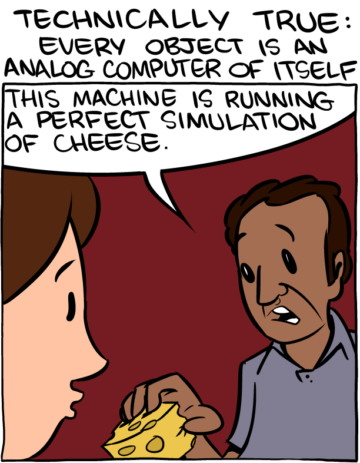
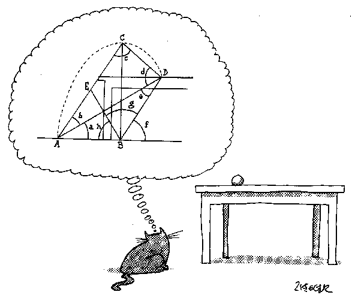
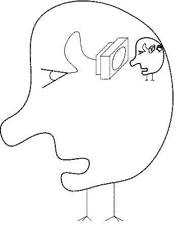

Week 1: the fundamentality of computation
Lecture 1.1

computational psychology
Fundamental observation #1:
— "cognitive psychology" — a term introduced in 1967 by Ulric Neisser of Cornell as a collective label for
the faculties of the mind such as perception, memory, decision-making, etc. — has turned out to mean
"computational psychology".
Indeed, not just cognitive, but all of psychology is inherently computational.
computational is special
Fundamental observation #2:
— computational (≈ mathematical) understanding is special
[consider Eugene Wigner's comments on math].
"I am not here to tell you the news, ..."
[Morris Halle, 1975]
[a digression] climate curriculum: the news and the truth

what is computational/cognitive psychology about?
Computational psychology is about how the mind works.
- Developmental psychology is about how the mind gets to work the way it does.
- Personality psychology is about how my mind may work somewhat differently from yours.
- Clinical psychology is about how the mind sometimes needs help
to work better.
- Social psychology is about how multiple minds work together;
also, about how the mind thinks it works (prescientifically).
- [Artificial Intelligence is about how machines can be made to
solve some of the problems that natural minds contend with and
solve.]
- [Machine Learning is about how machines can learn to
solve some of the problems that natural minds contend with and
solve.]
But what problems do minds contend with and solve?
What problems do minds confront, in natural situations?
computational psychology is about...
What problems do minds confront, naturally?
- Consider the problems that are the staple of psychology
textbooks, such as:
- perception
- memory
- attention
Are these problems really the ones that minds confront and
solve? [Much more about this in Lecture 2.2.]
- And are the kinds of answers/explanations that psychologists
typically offer any good? —
- under "perception": scene reconstruction
- under "memory": storage and retrieval
- under "attention": focusing, steering, etc.
converging on a real explanation of how the mind works
- Consider the explanations typically offered by
psychologists and neuroscientists, like the one on the right —
-
What would a real explanation look like?
-
It would have to be intelligently reductionist, by showing how
complexity arises from simpler interacting elements.
-
It would have to be literal (as opposed to metaphorical) at its core.
Here's a the real explanation:
Minds are bundles of dynamical, open-ended COMPUTATIONS over
REPRESENTATIONS of the world that brains carry out so as to
maximize the probability of their continuing existence, by
exercising FORETHOUGHT.
is COMPUTATION just a metaphor?
-
the clockwork metaphor: the brain is like...
-
the switchboard metaphor: the brain is like...
-
the computer metaphor: the brain is like...
-
the truth: the brain is like...
COMPUTATION is what brains literally do for a living
-
the clockwork metaphor: the brain is like...
-
the switchboard metaphor: the brain is like...
-
the computer metaphor: the brain is like...
-
the truth: the brain is
like
literally a kind of computer.
the truth about the brain: it is a kind of computer
How come the brain is a kind of computer?
- [the trivial reason]
Because everything is. [Consider again Wigner's comments.]
the truth about the brain: it is a kind of computer

How come the brain is a kind of computer?
- [the trivial reason]
Because everything is. [Consider again Wigner's comments.]
the truth about the brain: it is a kind of computer
How come the brain is a kind of computer?
- [the trivial reason]
Because everything is. [Consider again Wigner's comments.]
- [the special reason]
Because ALL the tasks that the brain must carry out to survive are
inherently computational. Evolution, the arbiter of survival, may be
slow, but it never sleeps.
Compare:
— a piece of chalk computing its trajectory as it falls
— a cash register
what determines whether or not an object is a cash register?
Selection (natural or artificial) pushes
information-processing systems (natural or artificial) to succeed in
processing information.
Cash-registerhood cannot be about what the
device IS MADE OF.
It must be about what it DOES.
what determines whether or not an object is sentient? (= is of interest to psychology)
It cannot be about what it IS MADE OF.
It must be about what it DOES.
[And no, brain scans are not the answer: all
they show is brain cells firing in patterns]
minds NECESSARILY CONSIST of NOTHING BUT computations: example #1 (perception)
the lightness perception problem

minds NECESSARILY CONSIST of NOTHING BUT computations: example #2 (thinking)
the supermarket queuing problem
minds NECESSARILY CONSIST of NOTHING BUT computations: example #3 (action)

the motor control problem
minds NECESSARILY CONSIST of NOTHING BUT computations: example #3 (action)
the motor control problem
minds NECESSARILY CONSIST of NOTHING BUT computations: example #3 (action)
the motor control problem
minds NECESSARILY CONSIST of NOTHING BUT computations: example #3 (action)
the motor control problem
[For a perfectly executed cat jump, see here]
minds, computations, and a bet
A standing bet that I offer:
For ANY aspect or faculty of the mind that you would care to
name, I can state and motivate a computational formulation of
the relevant task(s).
For certain aspects and faculties of the mind, some actual
understanding of how the tasks are solved is also available.
now: a refresher on computation
-
Dynamical systems
-
How to get complexity from simplicity
-
Turing Machines
The reason I make a point of mentioning Turing Machines at this
stage (they will not make another appearance this semester):
On the face of it, the human mind gives off the impression
of overwhelming complexity. Learning that such complexity
can be built up from very simple elementary building blocks
(as a TMs can do it) is therapeutic.
a dynamical system: a piece of chalk + the earth, gravitating to each other
An object in free fall — part of a dynamical system* consisting of the
object and the earth, gravitating to each other — computes its
instantaneous velocity and location, given the elapsed time (the key
factor being the acceleration due to gravity).
On the left: our experience of the world incorporates implicit knowledge of
the dynamics of gravitation and other laws of physics.
*A
dynamical system is a system that computes
the succession of its
states
over
time as prescribed by a function
of the current state (and possibly also past states and any
inputs).
a dynamical system: the Game of Life
Conway's game of Life is a (digital/discrete) dynamical system* —
Observe: it possesses a hierarchical structure.
Hierarchical structure is what makes complexity tractable.
complexity from simplicity: a check point
Most behavioral tasks DO NOT reduce to the execution of a set of
fixed rules or the application of a fixed mapping from inputs to
outputs.
Compare, for example
- playing chess or Go
with
- getting lunch
A complex problem is tractable insofar as it can be approached as a
hierarchy of simpler problems.
Even then, a closed-form ahead-of-time solution may not exist and
active incremental "online" control — a sequence of simpler steps,
each depending on present and past interaction with the environment
— may be required.
Complexity emerges out of simplicity.
computing the mind HIERARCHICALLY, level by level

A computation that is reducible to a series of simple (= "stupid")
steps (perhaps hierarchically) is called effective.
[An effective explanation of the mind would need no miracles and no homunculus.]
effective computation
A procedure P for achieving some desired result is called
effective or "mechanical" if:
-
P is set out in terms of a finite number of exact instructions
(each instruction being expressed by means of a finite number of
symbols);
-
P will, if carried out without error, always produce the desired
result in a finite number of steps;
Because each step in an effective procedure — even in a very complex one
— is specified in simple terms, it can be executed by a machine whose
components are simple ("stupid").
an epitome of "complexity out of simplicity": the Turing Machine
A key conceptual tool for understanding how complexity can emerge out of
simplicity is the Turing
Machine.
The Turing Machine is a very general formalism for describing an
effective mapping between input and output symbol streams.
TMs are a general formalism for effectively mapping inputs to outputs
A Turing Machine consists of:
-
a table that specifies exactly how the machine's state changes...
-
...in response to symbols...
-
...that it reads (and writes)...
-
...on a memory tape.
the Turing Machine is a very powerful formalism
Amazingly, various apparent enhancements (such as adding more tapes or
more read/write heads) do not increase the power of the Turing
Machine as originally defined.
Any general-purpose programmable computer has
that same power.
how much should we care about Turing Machines?
The TM is a proof of the principle that very complex computations can be
broken down into sequences of very simple ones.
To the extent that cognitive computations can be
expressed as sequences of
very simple elementary steps (such as
TM operations), cognition can be explained so that there is no "devil in
the details" and no recourse to miracles.
Turing Machines and dynamical interactive computation

IMPORTANTLY, real behavior does not reduce to completing a computation
that maps a fully given input to an output: DYNAMICAL ONGOING CONTROL is typically
needed.
how much should we care about Turing Machines?
[The paper, published in Trends in Cognitive Sciences 15:293-300
(2011), can be found
here.]
The brain can EMULATE (carry on the operations that correspond to
the running of) a Turing Machine, but this is not its NATIVE mode
of operation. There is always a difference between native
computation and emulation (more about this later in the course).
Turing Machines, brains, dynamics, and representation
A Turing Machine and the brain are both examples of
dynamical systems with a very rich capacity (1) for
stringing together elementary actions and (2) for building up
hierarchically structured complex actions out of simple ones.
However, brains are very much unlike — and with regard to what they
compute natively, entirely unlike — Turing Machines.
Functionally, brains particularly excel at ongoing
control of flexible behavior.
In this, and in everything else that brains do, they rely on the
critically important ability to REPRESENT cognitive
PROBLEM AND SOLUTION SPACES, including the dynamics of the world.
a dynamical system
(e.g., a brain, or a computer)
|
state 1
|
→
|
state 2
|
→
|
state 3
|
→
|
[...]
|
a dynamical system
(in the world at large)
|
state A
|
→
|
state B
|
→
|
state C
|
→
|
[...]
|
the basic explanatory concepts coming together
a dynamical system
(e.g., a brain, or a computer)
|
state 1
|
→
|
state 2
|
→
|
state 3
|
→
|
[...]
|
a dynamical system
(e.g., a brain, or a computer)
|
state I
|
→
|
state II
|
→
|
state III
|
→
|
[...]
|
a dynamical system
(in the world at large)
|
state A
|
→
|
state B
|
→
|
state C
|
→
|
[...]
|
- computation is everywhere: every dynamical system computes
its next state;
- some computations represent each other because of their
matching causal organization (dynamics);
- recurring causal patterns of events in the world make forethought possible;
- minds evolve and function by making use of all of the above.
MINDS are bundles of dynamical, open-ended COMPUTATIONS over
REPRESENTATIONS of the world that brains carry out so as to
maximize the probability of their continuing existence, by
exercising FORETHOUGHT.
[EXTRA: concerning forethought and prediction]
what next? (the approach that this course takes)
- food for thought — superficial accounts of aspects of cognition
- perception
- memory
- learning
- decision making and action
- sequential behavior
- language
- reasoning
- problem solving
- emotions
-
tools for thinking —
in what terms cognition can be understood, and
how it should be studied:
- computational analysis of the problems that arise in
cognition
- experiments motivated by, or shedding light on, computational theories
- a glimpse of the power and the limitations of neural computation
- the overarching computational principles that govern brain function
what next? (the content)
-
Week 1. Motivation.
-
Week 2. Universal tools, I: methodology.
-
Week 3. Universal tools, II: probability, Bayes.
-
Week 4. Universal tools, III: similarity, generalization.
-
Week 5. Universal tools, IV: representing similarities, veridicality.
-
Week 6. Memory.
-
Week 7. Actions and consequences, reinforcement learning.
-
Week 8. Higher cognition, I: language.
-
Week 9. Higher cognition, II: reasoning.
-
Week 10. Higher cognition, III: general intelligence,
problem-solving, analogy, creativity.
-
Week 11. Real neural computation, I.
-
Week 12. Neural computation, II.
-
Week 13. Neural computation, III. Advanced topics I.
-
Week 14. Advanced topics II.
-
Week 15. Wrapping up.
administrative details
The team:
- Shimon Edelman
Office hours: TR 11:30 - 12:00 (immediately after each class)
in 232 Uris Hall, or by
appointment over Zoom.
- Hetvi Doshi
Office hours: TBA.
technical details: navigating the web site
The home page:
https://shimon-edelman.github.io/Psych-3140
To navigate the slides for a given lecture, use the keyboard
arrows (click the help button in the toolbar below for help).
readings: the book and the papers
-
The textbook
is Computing the Mind: How the Mind Really
Works (Oxford University Press, 2008); the library has a couple of
copies on reserve.
-
I maintain an
online list of corrections. If
you find an error, please let me
know.
-
For an informal introduction to the material covered in this course,
see my slightly newer (and much lighter) book, The
Happiness of Pursuit (Basic Books, 2012).
-
As an antidote to the positive psychology leanings and neoliberal
politics bullshit of my 2012 book, you may want to read my
Life, Death, and Other Inconvenient
Truths (MIT Press / Penguin, 2020).
-
The syllabus has altogether too many references (I can never
resist listing a paper that I think is relevant and clever) — but
the number of assigned readings per week is really small. You can
do it!
make sure to read the syllabus!
-
All the information you need on the readings, assignments, etc. is
in the syllabus — please give it a close
reading and email me with
any questions.
-
There are no exams in this course. The weekly reading
and writing assignments will determine the final grade (see
the syllabus).
- reading: collaborative annotation
- writing: the prompt for each week's micro-essay
-
Up to 3 bonus points can be earned through participation in
experiments advertised
on SONA. These get added to the final course score
before it is converted into a letter grade.
closing remarks for today
There will be math...
\(
\bar{L}\left(\tilde{\textbf{x}}\mid\textbf{y}\right) =
\int_{\textbf{x}} L\left(\tilde{\textbf{x}},\textbf{x}\right)
p\left(\textbf{x}\mid \textbf{y}\right) d\textbf{x}
\)
...but it's nothing you can't manage.